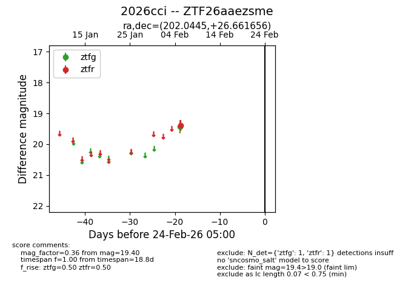
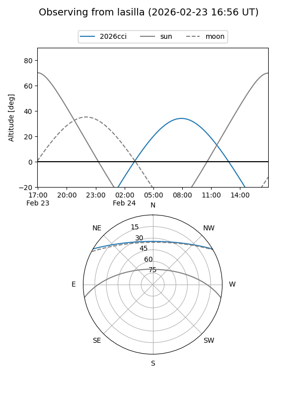
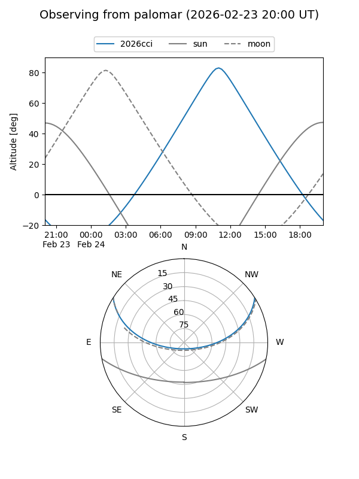

2026cci
Target 2026cci at 2026-02-24 09:08
Aliases and brokers:
FINK: link
Lasair: link
ALeRCE: link
TNS: link
YSE: link
alt names
ZTF26aaezsme (ztf,fink_ztf)
2026cci (tns,yse)
Coordinates:
equatorial (ra, dec) = 202.0445,+26.66166
equatorial (HMS+DMS) = 13:28:10.68,+26:39:41.96
galactic (l, b) = (31.7598,+81.79700)
Flags:
Photometry:
last ztfg=19.44, ztfr=19.40
1 ztfg, 1 ztfr detections
Lightcurve

Visibility


Additional plots